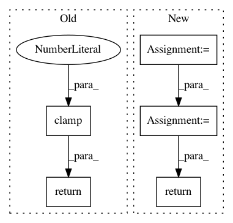

8c40ed8fb56baef7ab5ce8d5ed85bb10e4f09174,gpytorch/lazy/kronecker_product_lazy_tensor.py,KroneckerProductLazyTensor,root_decomposition,#KroneckerProductLazyTensor#Any#,199
Before Change
evals, evecs = self._symeig(eigenvectors=True, return_evals_as_lazy=True)
// TODO: only use non-zero evals (req. dealing w/ batches...)
f_list = [
evec * eval.diag().clamp(0.0).sqrt().unsqueeze(-2)
for eval, evec in zip(evals.lazy_tensors, evecs.lazy_tensors)
]
F = KroneckerProductLazyTensor(*f_list)
return RootLazyTensor(F)
else:
return super().root_decomposition(method=method)
@cached(name="size")
After Change
if self.shape[-1] <= settings.max_cholesky_size.value():
return super().root_decomposition(method=method)
root_list = [lt.root_decomposition(method=method).root for lt in self.lazy_tensors]
kronecker_root = KroneckerProductLazyTensor(*root_list)
return RootLazyTensor(kronecker_root)
@cached(name="root_inv_decomposition")
def root_inv_decomposition(self, initial_vectors=None, test_vectors=None):
from gpytorch.lazy import RootLazyTensor
In pattern: SUPERPATTERN
Frequency: 4
Non-data size: 5
Instances
Project Name: cornellius-gp/gpytorch
Commit Name: 8c40ed8fb56baef7ab5ce8d5ed85bb10e4f09174
Time: 2020-12-16
Author: wjm363@nyu.edu
File Name: gpytorch/lazy/kronecker_product_lazy_tensor.py
Class Name: KroneckerProductLazyTensor
Method Name: root_decomposition
Project Name: Scitator/catalyst
Commit Name: 1a73a1367fedfa8368b6c42103e60e1b370bc14a
Time: 2019-04-19
Author: scitator@gmail.com
File Name: catalyst/contrib/criterion/focal_loss.py
Class Name: FocalLoss
Method Name: forward
Project Name: facebookresearch/pytext
Commit Name: 78c4f927b3041914694399b5532ac532d8967114
Time: 2019-02-26
Author: mikaell@fb.com
File Name: pytext/loss/loss.py
Class Name: KLDivergenceCELoss
Method Name: __call__
Project Name: rusty1s/pytorch_geometric
Commit Name: 45a03ac258234ba49c0a43d46ae022493190591e
Time: 2019-03-26
Author: matthias.fey@tu-dortmund.de
File Name: torch_geometric/nn/models/autoencoder.py
Class Name: GAE
Method Name: loss